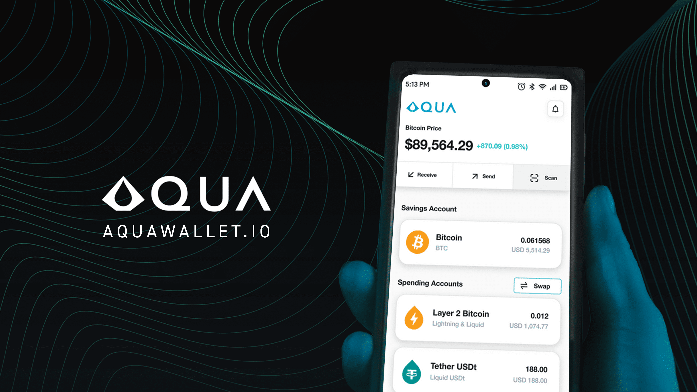
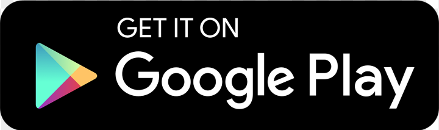
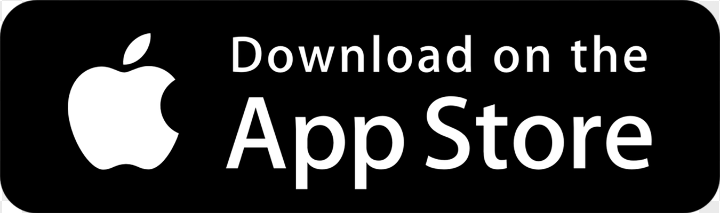
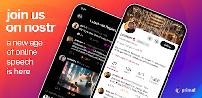
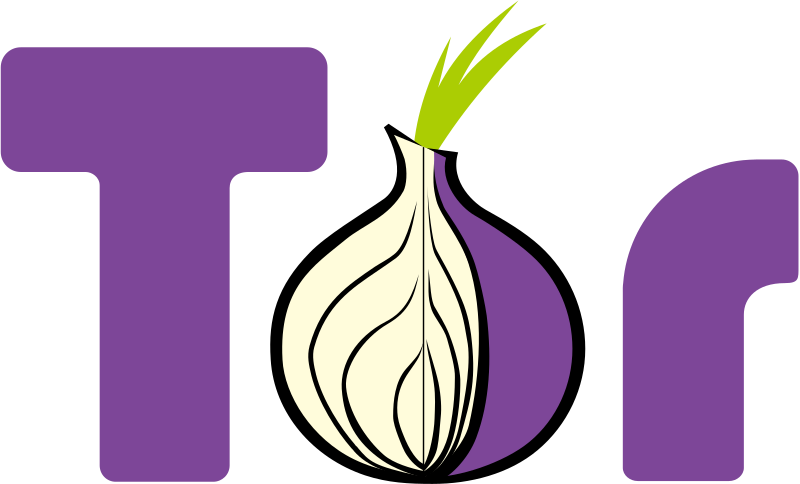
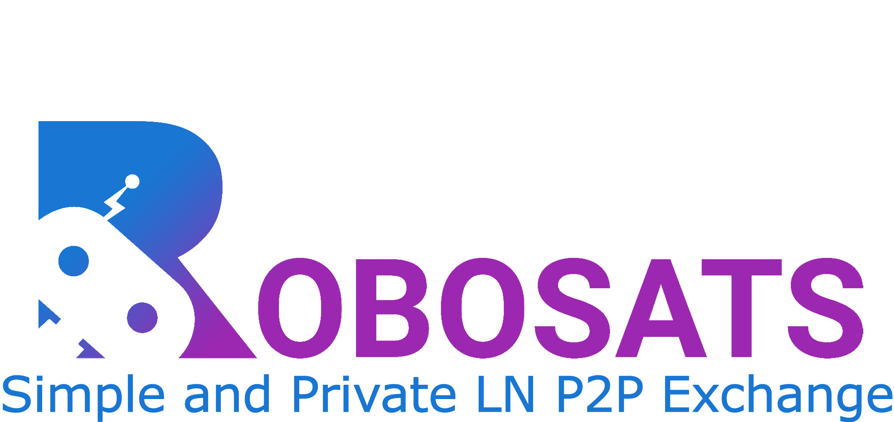
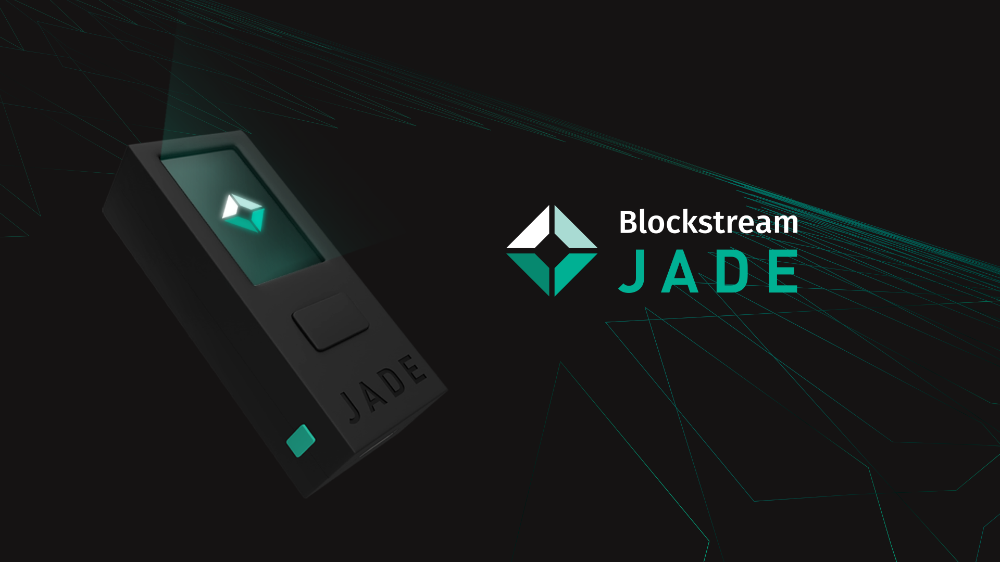
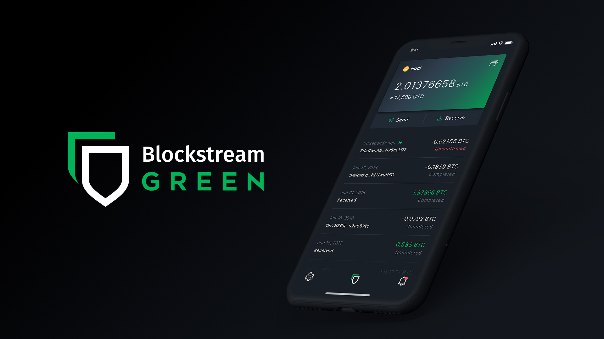

Beginners Guide to Buying Bitcoin
While the amount of homework that is required to understand the intricacies of Bitcoin can be overwhelming to newcomers, it doesn't take a genius to see that institutional and nation state adoption of a bitcoin standard is a really big deal. The world is dumping the US Dollar for the gold of the digital age. In my other article, I go over what makes Bitcoin the most valuable asset you can own, but today, I will specifically explain what steps I would take if I were to start from scratch in 2025 knowing what I know today.
My method isn't the EASIEST method, however, it insures your financial privacy at a medium-high threat level model. If you don't care about the fact that bad people could know how much bitcoin you own, and where you store it, you can always give all your personal data to a major exchange and hope they don't steal your funds from under your nose. I've heard and seen a lot of horror stories of people who bought Bitcoin from Coinbase.
So here is my step-by-step Privacy-Focused, Newcomer-friendly guide to buying bitcoin:
1. Download Aqua Wallet



Aqua Wallet is an open-source bitcoin and layer 2 wallet option. When they first went open source, I did a bit of QA for them and they implemented all the fixes quickly. It's my prefered beginner/mediator wallet as users get the added privacy of the Liquid and Lightning network. Unlike other Lightning wallets, your bitcoin that is sent to Aqua wallet doesn't require any channel openings or liquidity, your money is directly pegged into the liquid network and you can stack as much as you want before moving it to cold storage.
2. Download the Primal app and create a Nostr Profile

This serves 2 purposes. First of all, exposure to the active development bitcoin community will help you learn a lot about this magical coin in a relatively short amount of time. Nostr is a decentralized social media protocol that allows you to freely "zap" sats (fractions of a bitcoin) and receive sats with no mediator in the middle. If someone likes your post, they can send you bitcoin, it's really that simple. The Primal app has a built in bitcoin wallet that you can setup on install and start receiving zaps immediately. The goal here is to start stacking zaps until you have between 4k-10k sats. Use the hashtag #introductions and let the community know that you're new and using this guide to get started with Bitcoin and I'm sure people will be more than happy to help you get started. You can also find me at https://primal.net/bass or npub1ll99fcrclkvgff696u8tq9vupw9fulfc8fysdf6gfwp7hassrh2sktxszt.
3. Download Tor Browser (Android) or Orbot and Onion Browser (IOS)

Tor browser allows to to surf the clearnet web with added privacy through proxys. Basically, if someone is trying to track you, Tor makes it a lot more difficult. It's similar to using a VPN but allows the additional benefit of accessing the privacy focused aspects of the deepweb. You might be asking why in the world am I wanting to give you access to the darkweb where people can buy hitman for hire. The vast majority of Tor users simply don't want tyrannical and corrupt government agencies tracking their every step in life. We have the right to privacy and what we chose to share with the world. Browsers today are willing to comply with any Godless entity to strip your rights away without you knowing it. My point is, everyone uses the potty, but you should have the right to close and lock the door. Regardless, Tor/Onion Browser is going to be the only way we access the site in my next point.
4. Navigate to Robosats

Robosats is a privacy friendly, nonKYC (know-your-customer) p2p exchange, where users can exchange fiat for bitcoin without revealing their identity. Robosats built in protection insures that both parties submit the funds they are exchanging before the opposite party receives their desired asset. Basically, Robosats is the guard in the middle making sure no shady business happens. Use this link to access the exchange from your newly downloaded Tor/Onion Browser: RoboDexarjwtfryec556cjdz3dfa7u47saek6lkftnkgshvgg2kcumqd.onion
5. Buy Bitcoin on Robosats
Remember those 4-10k sats we stacked from Primal? Those are going to be used as an anti-spam retainer that will be refunded back to you as soon as the transaction is completed. They will allow you to buy your first investment into the hardest money ever created. Make sure you specify that you want to receive funds to your Aqua Wallet address, which you will get when going into Aqua Wallet, selecting Receive>Lightning and you'll copy that encrypted string into Robosats where it will ask for your lighting URL once you set the sat amount Robosats tells you to set your invoice for. Your sats can safely stay in Aqua Wallet until you have accumilated between 2-5 million sats, at which point we will want to move it to more secure cold storage.
6. Once you have accumilated a bit of bitcoin overtime, buy a hardware wallet.

It's now time to secure your funds with more than just a phone wallet. BlockStream Jade is a simple to use and setup hardware wallet that will allow you to keep your funds from ever touching the internet and thus becoming suseptible to hackery and theft. You'll want to download the Blockstream Green Wallet app as well to connect with the Blockstream Jade so that you can access the wallet and easily produce a bitcoin address to send your Aqua Wallet sats to your newly created cold storage wallet. The reason you want to wait to send sats into cold storage until you've aquired 2-5mil is because of this thing called UTXO's. Basically, everytime you send sats on-chain, it's like receiving a piece of bitcoin. Receiving multiple pieces of bitcoin is awesome, but if you want to use them in a future trade, each piece of bitcoin you have will incure it's own fees. Kinda like a chocolate bar that is broken up in multiple fragments, it doesn't just melt together when you want to use it for on-chain transactions. HOWEVER, Aqua Wallet uses the Liquid network which makes sure your bitcoin stays in a "liquid" state, if you will. You don't have to worry about consolidations and mixing UTXO's with liquid as once you send it to your cold storage, all the sats you send will become one solid UTXO. Blockstream Green wallet also has the added benefit of supporting Liquid network, so if you want to get your sats off of your online Aqua Wallet before you hit the 2-5mil sat mark, you can always keep it secure on your blockstream green liquid wallet.
Blockstream Green Wallet App

7. Repeat!
Congratulations, you've safely stored your bitcoin into a wallet that only you have access to. Welcome to true financial freedom! To accumilate more, you will continue using Robosats through Tor/Onion Browser with Primal sats as your refundable retainer. Enjoy the Nostr community, learn everything you can about current projects, privacy tech, open-source technology, and how people are living on a bitcoin standard, free from fiat manipulation, in todays world.
For additional help, feel free to contact me through my contact form at Bastion Tech